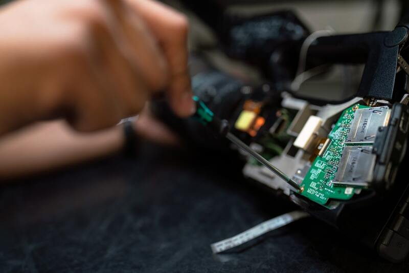

Repair desk
The workshop is the reason Nexus Tech is not just another device counter. Bring a cracked screen, a swollen battery or a laptop that will not charge. Book a slot so you are not standing at reception through lunch.
- Phone and tablet screens
- Batteries and charging ports
- Storage upgrades on supported laptops
- Windows setup, data backup and malware cleanup

Frequently asked questions
Most phone screens are done the same day if the part is in stock. Laptop screens usually take 1–2 days. We confirm the time when you book.
Yes. All repairs carry a 90-day workmanship warranty. Parts have their own manufacturer warranty where applicable.
Yes. Both Sandton and Midrand accept drop-offs. The workshop is shared, so turnaround times are the same.